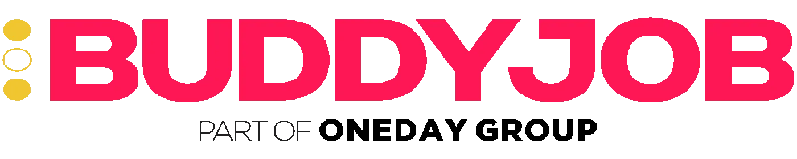
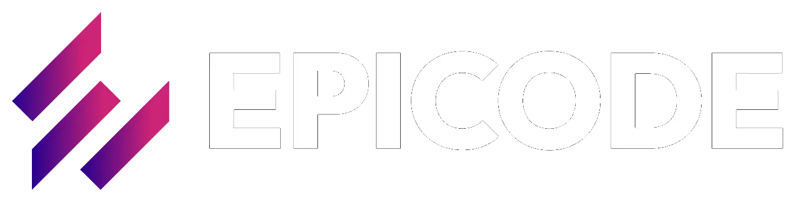
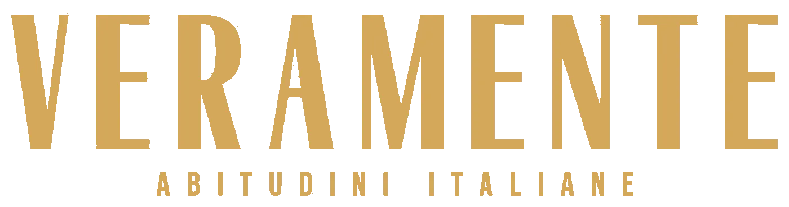
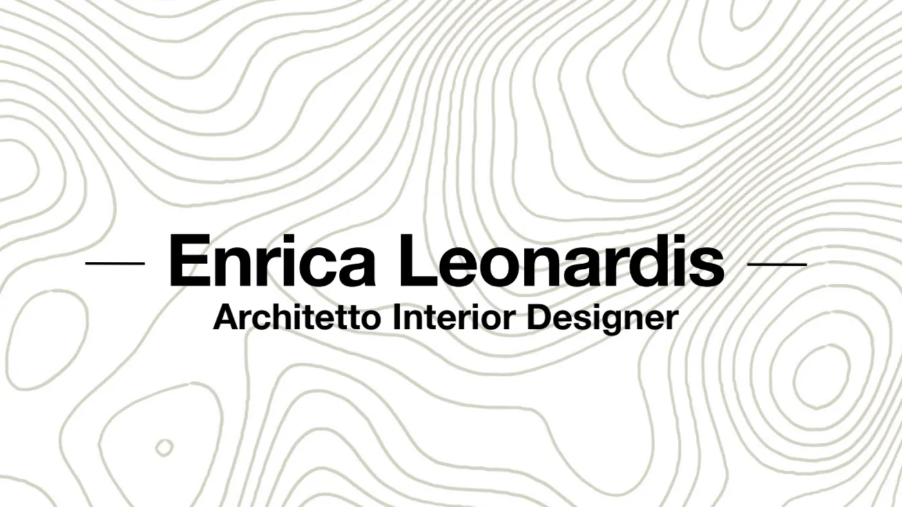
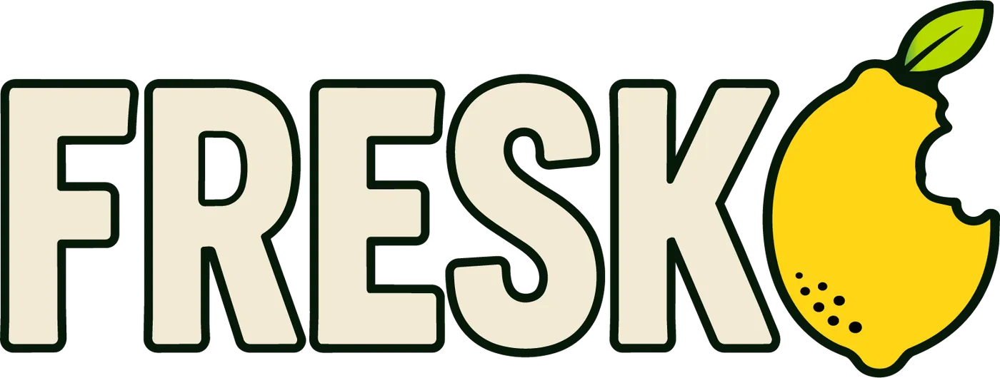

Trasformo quello che un brand ha da dire in qualcosa che
valga la pena ascoltare.
passaci sopra col mouse
Content StrategyCopywritingSocial MediaSocial Media DesignVideo ProductionLive Coverage
01
Storia
“Tutto è scalabile e reinventabile.”
sono io, più o meno
Ciao, sono Alice.
Lavoro nel content marketing e la parte che mi interessa di più è capire che forma dovrebbe
prendere un'idea per funzionare davvero. A volte diventa un format, altre un video, una strategia,
un visual o qualcosa che prima non sapevo ancora fare.
Fuori dal lavoro cambia il materiale, non molto il meccanismo: leggo, cammino possibilmente in
salita, disegno, costruisco cose con le mani e ogni tanto decido che una parete starebbe meglio di
un altro colore.
Difficilmente lascio le cose esattamente come le ho trovate.
Cinque anni di content marketing, passo dopo passo.
2021
Inizio a mettere le mani nella comunicazione
Tra contenuti, materiali aziendali e comunicazione quotidiana, inizio a capire che trasformare informazioni in qualcosa di chiaro e interessante mi viene piuttosto naturale.
2022
Entro in un'agenzia di comunicazione
Tra copy, progetti e clienti, capisco che la parte che mi interessa di più è trovare l'idea giusta e capire come trasformarla in qualcosa che funzioni davvero.
2025
Aggiungo il movimento
Scelgo di approfondire Video & Digital Strategies. Alla scrittura si aggiungono riprese, montaggio e linguaggi social: le idee iniziano a prendere forma in molti più modi.
2026
Dall'idea alla pubblicazione
Content Marketing in BuddyJob. Oggi seguo i contenuti lungo tutto il percorso: concept, format, grafica, video, copy, pubblicazione e community.
02
Filosofia
Non sapere fare una cosa non significa che sia
impossibile,
significa solo che non hai ancora imparato come farla.
Quello che conta, per me, è non fermarsi davanti a ciò che ancora non si sa fare: lasciarsi incuriosire, sperimentare, cambiare direzione e trovare il proprio modo, senza sentirsi troppo vincolati da come “si dovrebbe fare”.
Non credo esista sempre un giusto o uno sbagliato: conta che una cosa abbia senso, funzioni e convinca davvero. E anche quando il risultato soddisfa, non è detto che sia un punto d'arrivo: si può sempre andare un po' più in là.
le cose che so fare (per ora)
01Content Strategy
02Copywriting
03Social Media
04Social Media Design
05Video Production
06Live Coverage
Tools
ChatGPT
Claude
PrPremiere Pro
AiIllustrator
AeAfter Effects
03
Progetti
Quando un'idea trova la sua forma.
Strategie, contenuti, video e identità: progetti diversi, nati da problemi diversi e sviluppati trovando ogni volta la forma più adatta.
scorri, poi clicca una card
01Social Media · Content Strategy

Leggere il lavoro. Poi raccontarlo.
+10.395 follower in poco più di tre mesi
Per BuddyJob trasformo conversazioni, trend e situazioni quotidiane in contenuti capaci di informare, creare riconoscimento e far partecipare la community.
BuddyJob
02Social Media · Content Strategy

Capire il tech abbastanza da saperlo raccontare.
Ricerca, contenuti e community management per costruire una voce tech competente, accessibile e riconoscibile.
EPICODE
03Video Production · Motion

Montare con la musica, non sopra.
Shooting, montaggio e motion per contenuti social sviluppati per brand e linguaggi diversi.
Video Esperienza in agenzia · Sinapss
04Communication Strategy · Content · Video

Prima capire cosa dire. Poi decidere come.
Dall'analisi del posizionamento alla strategia social, fino alla produzione di un video corporate multicamera.
Strategia In team per Enrica Leonardis · Architetto Interior Designer
05Naming · Visual Identity · Product Concept

Fresco, ma con la K.
Naming e identità visiva per una web app che aiuta a ricordare cosa c'è in frigo, monitorare le scadenze e utilizzare gli alimenti prima che vengano sprecati.
Come rendere interessante un argomento di cui parlano già tutti?
Instagram · giugno – settembre 2026 · 3,7M visualizzazioni organiche · +10.395 follower
Research & Social ListeningConceptCopywritingFormatEditorial DesignSocial Media ManagementVideo ProductionADVCommunity Management
Il lavoro è ovunque sui social: colloqui, burnout, stipendi, carriera, colleghi, dimissioni.
La sfida non era trovare qualcosa di cui parlare, ma trovare ogni volta un modo diverso di farlo.
Per BuddyJob lavoro sui contenuti social dalla ricerca all'idea, fino a copy e sviluppo visivo, cercando un equilibrio tra informazione, attualità, riconoscibilità ed engagement.
Il mio ruolo
Osservo conversazioni, trend e notizie sul mondo del lavoro e cerco l'angolo che può diventare BuddyJob. A volte significa approfondire. A volte spiegare. A volte basta un meme fatto nel momento giusto.
Poi lo porto fino in fondo. Seguo ricerca, concept, copy e grafica; per i video scrivo lo script, giro, monto e a volte ci metto la faccia. Curo anche le campagne ADV, i contenuti per LinkedIn e la community nei commenti.
Un profilo non si costruisce post per post.
Per BuddyJob ho lavorato alla costruzione di un sistema editoriale che non riguarda solo cosa pubblicare nel feed, ma anche come accompagnare chi arriva sul profilo.
Ho sviluppato un piano editoriale capace di alternare informazione, attualità, format ricorrenti, conversazioni della community e contenuti più leggeri, lasciando allo stesso tempo spazio a trend e temi che emergono nel momento.
Anche le Stories e le raccolte in evidenza fanno parte di questo lavoro: sono pensate per orientare chi scopre BuddyJob, spiegare servizi e strumenti e rendere il profilo più facile da esplorare.
Ogni contenuto ha un ruolo. Anche quando non finisce nel feed.
Cosa raccontiamo
01InformareDati, trend e dinamiche del lavoro.
02ApprofondireCarriera, coaching e situazioni professionali.
03IntercettareNews, conversazioni e social listening.
04Creare relazioneMeme, community e contenuti riconoscibili.
05SperimentareFormat e nuovi linguaggi visuali.
Come organizziamo il profilo
01FeedContenuti editoriali, format e contenuti pianificati.
02StoriesAttualità, interazione, approfondimento e contenuti di servizio.
03HighlightsContenuti evergreen pensati per orientare chi arriva sul profilo, spiegare BuddyJob, i servizi e gli strumenti disponibili.
I numeri · Instagram · 1 giugno — 10 settembre 2026
3,7Mvisualizzazioni organiche+127,4%
2,6Mpersone raggiunte+128,2%
288,8Kinterazioni con i contenuti+176,5%
10.395nuovi follow+255,3%
Parte del sistema: Intercettare
Leggere i commenti prima di scrivere il post.
Una notizia molto discussa aveva acceso online una conversazione sui comportamenti normalizzati sul posto di lavoro.
Invece di fermarmi alla notizia, sono andata a vedere come ne stavano parlando le persone. Nei commenti ricorrevano continuamente le stesse frasi.
Da lì è nato: “10 frasi che in un ambiente di lavoro sono red flags”.
1,5Mpersone raggiunte
113Kinterazioni
29Kcondivisioni
19,8Ksalvataggi
5068follow generati
Un solo post, nessuna sponsorizzazione: quasi metà dei nuovi follower del periodo è arrivata da qui.
Il contenuto non nasceva dal trend in sé, ma da quello che le persone stavano dicendo intorno al trend.
Parte del sistema: Informare + Sperimentare
Un trend nuovo ha bisogno anche di una forma nuova.
Quando soft-on day e soft-off day hanno iniziato a entrare nella conversazione online sul lavoro, ho approfondito il fenomeno e costruito un contenuto che ne spiegasse significato e contesto.
Fotografia, tipografia, collage, riferimenti digitali e movimento cambiano lungo il carosello seguendo il contenuto, invece di costringerlo dentro un unico template.
Parte del sistema: Creare relazione
Non tutti i contenuti devono spiegare qualcosa.
Dopo una settimana di temi più densi, il feed ha anche bisogno di respirare.
I meme fanno parte del content mix di BuddyJob proprio per questo: intercettano situazioni quotidiane, creano riconoscimento e danno alla community qualcosa da mandare immediatamente a un collega.
223Kpersone raggiunte
29,6Kinterazioni
14,6Kcondivisioni
13,1Klike/reazioni
1390salvataggi
113nuovi follow
In questo caso le condivisioni hanno superato i like: il contenuto non è stato soltanto apprezzato, è diventato qualcosa da mandare a qualcun altro.
Parte del sistema: Sperimentare
Alcune idee hanno bisogno di muoversi.
Per i video seguo tutto il processo: scrivo lo script, giro, monto e a volte ci metto la faccia. Il formato cambia ma il criterio è lo stesso dei caroselli: partire da quello che le persone vivono davvero al lavoro.
Ogni contenuto ha un ruolo
Oltre il feed.
Contenuti per LinkedIn pensati per un pubblico più professionale, campagne ADV e, ogni giorno, le risposte nei commenti: la parte meno visibile del lavoro, ma quella che trasforma un pubblico in una community.
Trasformare quello che succede nel mondo del lavoro in contenuti che valga la pena fermarsi a leggere.
Per BuddyJob costruisco contenuti partendo da conversazioni, trend, dati e situazioni quotidiane. Il formato cambia ogni volta; l'obiettivo resta costruire una voce riconoscibile e una community che abbia voglia di partecipare.
Quando ho iniziato a lavorare su EPICODE, il tech non era il mio settore.
La sfida quindi non era fingere di conoscere ciò che non conoscevo, ma trovare un metodo per capire prima di raccontare.
Ricerca, fonti verticali, newsletter e confronto con il team sono diventati il punto di partenza per trasformare temi spesso tecnici in contenuti comprensibili, attuali e coerenti con la voce del brand.
La direzione editoriale, sviluppata insieme al team, ruotava intorno a un concetto preciso: lo “zio tech”. Qualcuno che il settore lo conosce, ma te lo racconta senza mettersi in cattedra.
Non dovevo sapere tutto. Dovevo sapere dove cercare, cosa verificare e come renderlo comprensibile.
Cosa faccio
Cerco temi e notizie attraverso newsletter e fonti di settore, individuo quelli che possono diventare contenuto, sviluppo concept, copy e visual e seguo la pubblicazione.
Mi occupo anche della gestione della community, con particolare attenzione ai contenuti ADV, dove commenti, dubbi e obiezioni diventano una parte importante del rapporto tra brand e pubblico.
Prima capire. Poi tradurre.
Non arrivando dal settore tech, ho costruito una routine di ricerca che mi permettesse di orientarmi tra temi, linguaggi e notizie prima di trasformarli in contenuti.
Newsletter verticali, fonti di settore e approfondimenti diventano il punto di partenza. Il lavoro successivo consiste nel capire quale parte della storia è davvero interessante per la community e trovare il modo più semplice — ma non semplicistico — per raccontarla.
02CommunityMeme, partecipazione e linguaggio condiviso.
03TrustAlumni e storie reali.
Parte del sistema: Relevance
Portare l'attualità tech dentro il feed, in modo comprensibile.
La ricerca partiva da newsletter e fonti verticali. Il lavoro non consisteva semplicemente nel riportare una notizia, ma nel capire quali temi potessero essere rilevanti per la community e trovare un angolo capace di renderli accessibili e interessanti.
Il post su Joseph Weizenbaum ed ELIZA parte dalla storia del primo chatbot per arrivare a una domanda contemporanea: quale confine umano non dovrebbe mai superare l'intelligenza artificiale?
1067interazioni nette
289salvataggi
137condivisioni
31follow
Parte del sistema: Community
Quando il contenuto lo sceglie anche la community.
Ogni sabato il feed lasciava spazio ai meme creati dalla community EPICODE: parlare la lingua di chi il mondo tech lo vive davvero e creare un appuntamento riconoscibile.
Il format è poi diventato un vero torneo. Ogni martedì alcuni meme venivano messi in sfida nelle Stories: la community votava i preferiti e il risultato determinava anche l'ordine di pubblicazione.
Community crea. Community vota. Il brand rimette tutto in circolo.
123.963visualizzazioni
78,5Kpersone raggiunte
4875interazioni
1580condivisioni
87follow
Parte del sistema: Trust
Far parlare il brand attraverso chi l'ha vissuto.
Le storie degli alumni rendono la promessa del brand più concreta attraverso persone, percorsi e lavori reali.
Il format parte dalla persona, racconta cosa fa oggi, traduce il suo ruolo in attività comprensibili e ricostruisce il percorso che l'ha portata fin lì.
A volte la risposta a un commento può diventare contenuto.
I video ADV di EPICODE generavano molti commenti: domande, dubbi, critiche. Insieme al team abbiamo trasformato alcune obiezioni ricorrenti in un set di Stories, con le persone di EPICODE a metterci la faccia.
Dietro al logo, persone riconoscibili.
Risultati generali · 1 giugno — 7 settembre 2026
36,3Mvisualizzazioni+7,4%
4,9Mcopertura+16,8%
89,9Kinterazioni con i contenuti+54,7%
7661nuovi follow+24,6%
148Kclic sul link+15,2%
67Kvisite al profilo+36,3%
Alcuni contenuti sono stati supportati da campagne paid: le metriche generali comprendono distribuzione organica e a pagamento.
Non serve appartenere a un settore per imparare a raccontarlo bene.
Su EPICODE ho imparato a costruire credibilità attraverso ricerca, ascolto e traduzione. Capire prima di scrivere, trovare fonti affidabili, scegliere l'angolo giusto e cambiare formato in base all'obiettivo.
Il ritmo si costruisce prima ancora del montaggio.
Shooting ListShootingEditingMotion
In Sinapss ho lavorato alla produzione e allo sviluppo di contenuti social per clienti molto diversi tra loro, con un focus particolare sul video.
Partivo dagli obiettivi di comunicazione per costruire le shooting list e trasformarli in sequenze visive coerenti con il linguaggio del brand. Seguivo poi direttamente riprese, inquadrature e montaggio finale.
In alcuni progetti sono stata anche davanti alla camera, quando serviva una presenza più diretta e spontanea nel contenuto.
Dal brief al video finito
01Shooting ListDall'obiettivo alle scene da girare.
02ShootingRiprese, inquadrature e costruzione del materiale.
03EditingMontaggio, timing e flusso narrativo.
04MotionTesti, transizioni e micro-animazioni.
Non montare sulla musica. Montare con la musica.
Tagli, cambi di scala, testi, transizioni e micro-animazioni seguono il sound e contribuiscono a costruire il movimento del video.
A seconda del cliente il ritmo può diventare più veloce, più morbido o più elastico. Il punto non era applicare lo stesso stile a tutto, ma trovare ogni volta il movimento giusto.
Il progetto nasce dalla necessità di rendere la comunicazione dello Studio Leonardis più riconoscibile, coerente e capace di trasmettere il suo metodo.
Abbiamo lavorato sull'identità del professionista, sui valori dello studio, sul target, sul posizionamento e sulla presenza digitale per costruire una strategia capace di raccontare non solo cosa fa, ma come lavora e cosa la rende diversa.
Analisi→Strategia→Sistema editoriale→Produzione
Capire prima di costruire.
Prima di definire contenuti e formati abbiamo analizzato il contesto: competitor, target e buyer personas, valori e punti distintivi dello studio, mission, posizionamento e presenza digitale del settore.
01TargetCapire cosa cerca davvero il cliente: ascolto, accompagnamento, affidabilità e un progetto che rispecchi la propria identità.
02CompetitorCome il settore costruisce autorevolezza attraverso qualità visiva, contenuti educativi, rubriche, bio chiare, CTA e presenza coerente.
03PosizionamentoIl punto distintivo non era proporre uno stile da imporre, ma costruire spazi insieme alle persone.
“Non seguiamo uno stile. Costruiamo il tuo.”
Trasformare il posizionamento in un sistema di contenuti.
Dopo la fase di analisi abbiamo costruito una strategia social completa, definendo obiettivi, formati, rubriche e direzione visiva: un piano editoriale con rubriche ricorrenti capace di raccontare progetti, metodo, competenze, persona e processo.
Le rubriche
01Prima / DopoCase history sintetiche per mostrare la trasformazione degli spazi.
02Il Glossario dell'ArchitettoTermini tecnici spiegati in modo accessibile.
03ArchitetTipsConsigli pratici su spazi, materiali e progettazione.
04ConosciamociContenuti dedicati a Enrica, al team, ai valori e alla storia dello studio.
05In viaggio con l'architettoIl modo in cui un architetto osserva e interpreta i luoghi.
Dal piano editoriale a un contenuto reale.
Uno dei contenuti sviluppati è stato un post dedicato alla trasformazione degli spazi, coerente con la rubrica Prima / Dopo.
La strategia arriva sul set.
Il progetto si è concluso con la produzione di un video corporate emozionale di circa 4 minuti, con vere riprese multicamera e interviste.
Mi sono occupata direttamente del montaggio finale: selezione delle interviste, alternanza delle camere, ritmo narrativo, musica e costruzione emotiva del video.
Dall'analisi al set. Dalla strategia al racconto.
Il mio contributo
01Strategy · in teamAnalisi, posizionamento, target e sviluppo della strategia insieme a una collega.
02Content System · in teamDefinizione di rubriche, formati e piano editoriale.
03Visual Direction · in teamScelta dei font, direzione grafica e adattamento dei contenuti.
04Video Production · in teamRiprese multicamera e interviste.
05Video Editing · a mia curaMontaggio completo del video corporate.
Prima capire cosa rende un professionista diverso. Poi trovare il modo di farlo percepire.
La strategia funziona davvero quando riesce a diventare contenuto.
Fresko nasce come web app anti-spreco pensata per aiutare le persone a sapere cosa hanno già in casa, tenere sotto controllo le scadenze e trovare modi per utilizzare gli alimenti prima che vengano dimenticati o buttati.
L'obiettivo non era costruire una comunicazione moralista o troppo “green”, ma rendere il tema dello spreco alimentare più vicino, giovane e appetibile.
Fresco, ma con la K.
Il naming doveva essere breve, facile da ricordare, internazionale, giovane e coerente con un prodotto digitale legato al cibo.
Il nome richiama immediatamente il concetto di freschezza, mentre la K lo rende più distintivo, contemporaneo e riconoscibile.
KEEP IT FRESKO.
Dare un volto al brand.
Il limone sostituisce visivamente la “O” di Fresko e da lui nasce anche la mascotte: cappellino e occhiali aggiungono personalità e trasformano il simbolo in un personaggio riconoscibile, giovane e informale.
Verde scuro#0F2B1E
Verde secondario#1D4D34
Lime#C8FF00
Off-white#F2F2E9
Giallo#FFD600
L'identità entra nel prodotto.
Logo, palette, tipografia, immagini food e tone of voice sono stati applicati alla web app per mantenere la stessa personalità anche nell'esperienza digitale.
Un'interfaccia che parla di anti-spreco attraverso il desiderio di utilizzare il cibo, non attraverso il senso di colpa.
Il mio contributo
01NamingDefinizione del nome Fresko e del suo posizionamento verbale.
02LogoSviluppo del wordmark e utilizzo del limone come elemento distintivo.
03Mascot DesignCreazione della mascotte e del suo tono giovane e riconoscibile.
04Visual DirectionPalette, typography e linguaggio grafico.
05Brand LanguagePayoff, mission e vision.
06Product ApplicationApplicazione dell'identità alla web app.